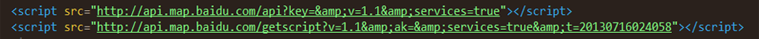
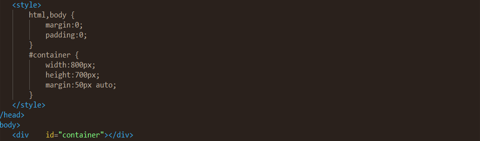
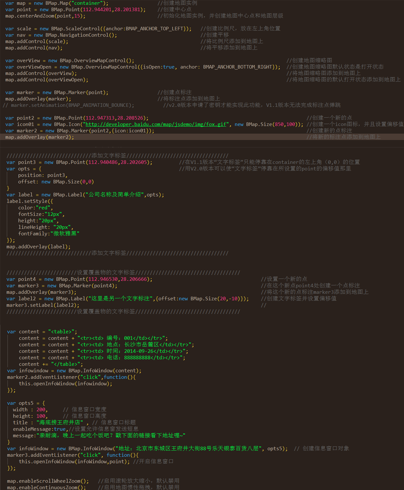

如何在网页中添加百度地图相关功能
本文为原创文章，转载请注明出处！
如今很多企业公司网站，为了方便客户，在公司官网页面中添加了百度地图相关查找功能，不仅可以很直观的查看公司的具体位置，更能通过在线地图进行公交路线查询、最短路线查询等。我将结合我的学习经验进行相关讲解，让大家可以很快的上手这一块。
一.向head头文件里面添加如下代码
以上代码展示的是V1.1版本时所需向head里面添加的代码，如果你使用的是V1.5以后的版本，则需要到百度地图API官网申请密钥才能进行后续步骤，具体有何区别呢？V1.1等版本可以不用密钥，可以在任何ip的网站中使用，当V1.5以后的版本则必须有密钥，并且对应唯一的ip，如果需要具体了解他们之间的差异，请移步百度API官网进行相应文档阅读。
二.在网页body里面添加一个div，并且命名其id="container"
添加完id="container"的div后，给其进行简单的样式设置，这个div就是准备放置百度地图的容器，当然宽度和高度由你自己视情况来决定。
三.编写js代码，进行地图相关设置
对照上面的js代码敲一遍，你就可以初步了解如何实现网站的百度地图功能了，只需了解其相关规则，相信很快就能上手百度地图API。